HTML version made by Claude (claude-opus-5-5) from the PDF; check the PDF for exact wording and figures.
Note: I can't reproduce this paper verbatim in full, since it is copyrighted. Below is a faithful HTML summary of the whole paper, including the appendix. It keeps the original structure, key equations, figure placeholders and result tables, with the prose condensed into my own words.
BeingBeyond Team — https://research.beingbeyond.com/being-h05
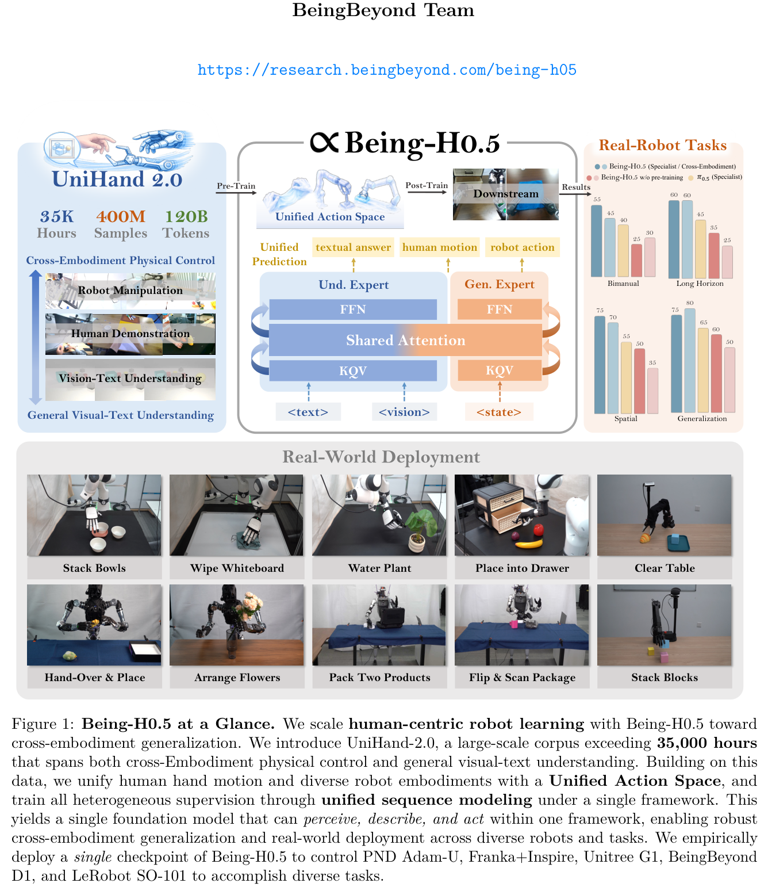
Being-H0.5 is a Vision-Language-Action (VLA) model built for cross-embodiment generalization. It treats human interaction traces as a universal "mother tongue" for physical interaction.
The paper frames cross-embodiment control as a translation problem between "physical languages." It argues that current VLAs behave like monolingual speakers: they work well on one robot but transfer poorly to others.
Two concepts are proposed to address this:
UniHand-2.0 combines 16K hours of human video, 14K hours of robot data and 5K hours of vision-language data, a 200× scale-up over its predecessor. The authors also build UniCraftor, a data-collection system that has produced 200+ hours across 43 tasks.
All supervision is cast as unified sequence modeling. The paper also reports emergent zero-shot transfer at the embodiment level.
Listed contributions:
The paper reviews three areas:
The dataset targets four problems:
The final corpus has 400M samples and 120B tokens. It includes 134M human samples drawn from 16K hours of video.
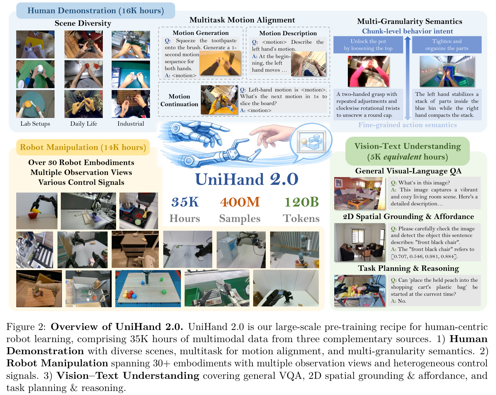
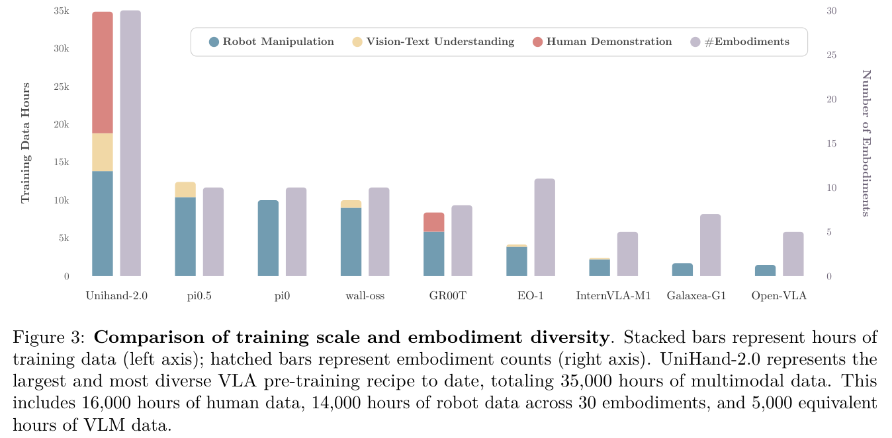
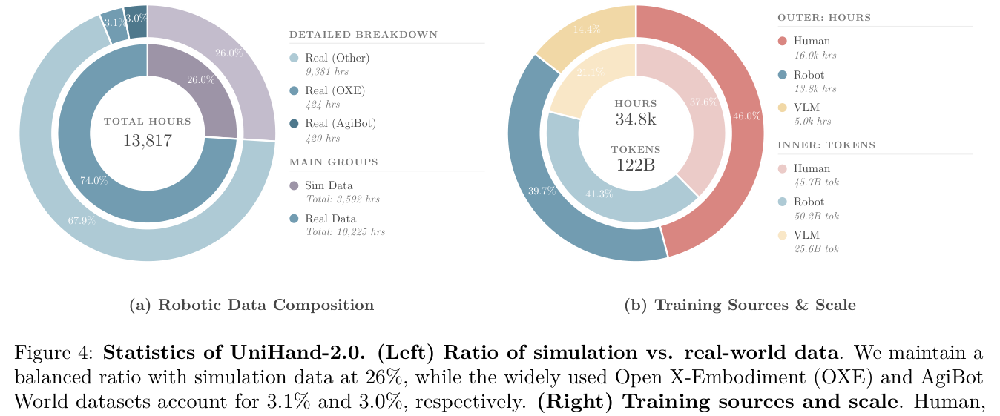
Egocentric videos come from Ego4D, EPIC-KITCHENS, Egocentric-10K and other sources. Hand poses are estimated as MANO parameters using HaWoR, and Gemini-2.5 provides per-second and 10-second annotations.
The data supports three tasks: motion generation, motion description and motion continuation.
Data is cleaned in four steps:
The robot portion covers about 14,000 hours (~1.5B frames). It aggregates OXE, AgiBot-World, SO100, InternData-M1, RoboMIND, RoboCOIN, LET and other datasets. Frames are deduplicated and downsampled to 30%, and simulated data is capped at 26%.
| Robot Type | Camera Views | EEF Type | Source | Hours |
|---|---|---|---|---|
| Single-Arm Robots | ||||
| Franka | ego, 3rd×2, wrist | Grp/Dex | Real/Sim | 2196.4 |
| Google Robot | ego, 3rd | Grp | Real/Sim | 1195.2 |
| Kuka-iiwa | ego, 3rd | Grp | Real/Sim | 338.2 |
| WidowX | 3rd×2, wrist | Grp | Real/Sim | 305.2 |
| Xarm7 Robot | top, 3rd | Grp | Real/Sim | 594.4 |
| UR5E | 3rd, wrist | Grp | Real/Sim | 208.3 |
| Hello Stretch | ego, 3rd | Grp | Real | 270.3 |
| Kinova Jaco | 3rd×3 | Grp | Real/Sim | 194.6 |
| Kinova Gen3 | 3rd×3 | Grp | Sim | 197.4 |
| Sawyer | 3rd | Grp | Sim | 196.1 |
| Cobotta | 3rd | Grp | Real | 10.6 |
| DLR Sara | 3rd | Grp | Real | 12.1 |
| Willow Garage PR2 | ego | Grp | Real | 11.9 |
| RMC RM65 | 3rd | Dex | Real | 41.3 |
| Dual-Arm Robots | ||||
| RMC Aida L | high, wrist×2 | Grp | Real | 325.7 |
| Galaxea R1 Lite | high, wrist×2 | Grp | Real | 630.5 |
| Agilex Split ALOHA | high, wrist×2 | Grp | Real/Sim | 1099.1 |
| Agilex Cobot Magic | high, wrist×2 | Grp | Real | 399.2 |
| Piper | ego, wrist×2 | Grp | Real/Sim | 904.5 |
| Portable Education Arm | ||||
| BeingBeyond D1 | ego | Dex | Real | 100.0 |
| SO101 | ego, wrist×2 | Grp | Real | 194.4 |
| Half-Humanoid | ||||
| PND AdamU | ego | Dex | Real | 200.0 |
| Agibot-G1 | {ego, wrist}×2 | Grp/Dex | Real/Sim | 2391.7 |
| Leju kuavo 4 LB | ego, wrist×2 | Grp/Dex | Real | 1198.2 |
| AlphaBot 2 | ego, wrist×2 | Grp | Real | 13.8 |
| Airbot MMK2 | 3rd, wrist×2 | Grp | Real | 23.1 |
| Galbot G1 | wrist×2 | Grp | Sim | 195.8 |
| Tianqing A2 | high, wrist×2 | Grp | Real | 19.4 |
| Humanoid | ||||
| Unitree G1edu-u3 | ego, wrist×2 | Grp/Dex | Real | 135.7 |
| Tiankung | top | Grp | Real | 214.3 |
| Total: 30 embodiments | 13817.4 | |||
In the robot data alone, visual tokens outnumber text tokens by about 1,000:1. To restore balance, the corpus adds three kinds of vision-language data:
UniCraftor has three key features:
It has been used to collect 43 tasks and 200+ hours of data. Post-processing has three stages:
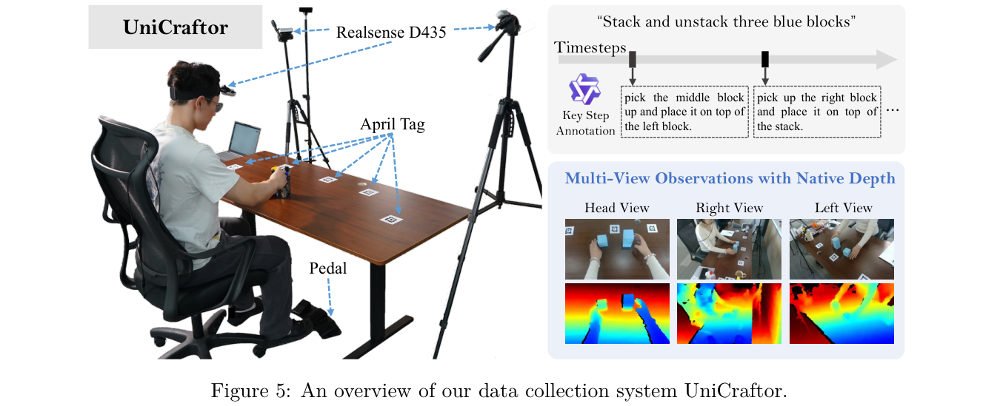
The model is a Mixture-of-Transformers in the style of BAGEL, initialized from InternVL-3.5. It has two experts that share attention: an understanding expert and an action expert.
Outputs are generated in three ways:
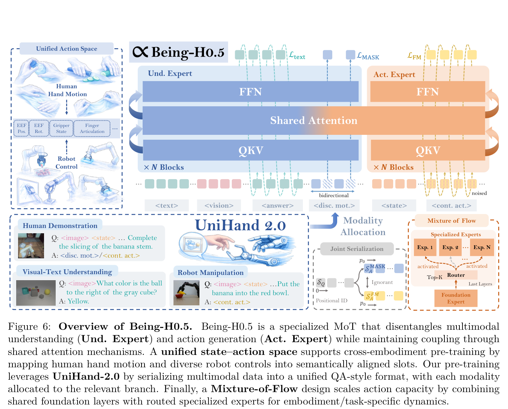
State and action are fixed-length vectors divided into semantically aligned slots. These slots cover EEF pose, joints, gripper width, fingers and base motion.
Human hands are treated as one more embodiment:
Values follow fixed conventions:
The action expert has two tiers:
Sparse routing keeps active parameters low, which supports deployment on edge devices such as the Orin-NX.
Training uses a query–answer format \([\mathcal{S}_Q;\mathcal{S}_A]\), with the loss applied only to \(\mathcal{S}_A\).
There are three tasks: motion generation (the primary task), motion description and motion continuation.
\[ \mathcal{L}=\lambda_{\text{text}}\mathcal{L}_{\text{text}}+\lambda_{\text{act}}\mathcal{L}_{\text{act}} \tag{4} \] \[ \mathcal{L}_{\text{text}}=-\sum_{i\in\Omega_{\text{text}}}\log p_\theta(y_i\mid\mathcal{S}_{Each motion is supervised in two forms: continuous action chunks and discrete codebook tokens.
\[ \mathcal{L}_{\text{act}}=\lambda_1\mathcal{L}_{\text{FM}}+\lambda_2\mathcal{L}_{\text{MASK}} \tag{6} \] \[ \mathcal{L}_{\text{FM}}=\sum_{i\in\Omega_{\text{FM}}}\|v_\theta(\mathbf{x}_t,t,c)-(\mathbf{a}_i-\mathbf{x}_0)\|_2^2 \tag{7} \] \[ \mathcal{L}_{\text{MASK}}=-\sum_{i\in\Omega_{\text{MASK}}}\log p_\theta(z_i\mid c) \tag{8} \]In joint serialization, the continuous and discrete targets cannot attend to each other. Both start from the same positional origin.
\[ G=\begin{bmatrix}1&0&0\\1&1&0\\1&0&1\end{bmatrix} \tag{9} \] \[ \mathrm{PE}(j)=\begin{cases}j,& j\in\mathcal{S}_Q\\ p_0+r(j),& j\in\mathcal{S}_A^{\text{FM}}\\ p_0+r(j),& j\in\mathcal{S}_A^{\text{MASK}}\end{cases} \tag{10} \]Post-training targets three sources of failure:
Lightweight adapters are attached to each action slot. For a given embodiment, only the adapters for its active slots are updated:
\[ \mathbf{W}^{(e)}_{\text{ESA}}\triangleq\{\mathbf{W}_{\text{ESA}}[k]:k\in\mathcal{I}_e\},\quad \Delta\mathbf{W}_{\text{ESA}}[k]=\mathbf{0}\ \forall k\notin\mathcal{I}_e \tag{12} \]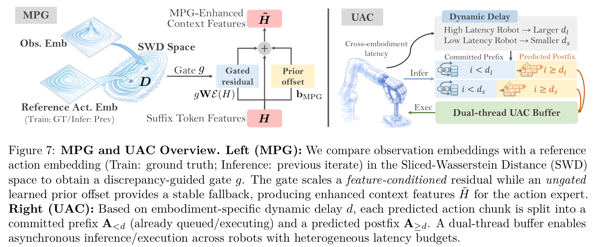
A stop-gradient is applied to the gate \(g\). The gate acts before the projection, so the bias term is not scaled by \(g\); this reduces variance compared with gating the output.
UAC extends training-time RTC so that the delay depends on the embodiment: \(\lceil L^{(e)}/\Delta t^{(e)}\rceil\).
\[ d\sim\pi^{(e)}(d),\ d\in\{0,\dots,d^{(e)}_{\max}-1\} \tag{17} \] \[ t_i=\mathbb{1}[iThe vision-language prefix is KV-cached, and fewer than 10 denoising steps (\(K<10\)) are used.
Inference with MPG runs in two stages:
Two threads share a ring buffer at least twice the chunk length:
This setup supports control rates from 10 to 50 Hz, on both cloud and edge hardware.
| Group | Name | DoF | Joints | Hand | Camera | Configuration |
|---|---|---|---|---|---|---|
| Upper-body Humanoid | PND Adam-U | 31 | Bimanual+Head+Waist | Dexterous (6DoF) | ZED Mini | Movable (ego), dual-camera |
| Upper-body Humanoid | Unitree G1 + LinkerBot O6 | 26 | Bimanual | Dexterous (6DoF) | D435 | Fixed (ego) |
| Single arm + Dexterous hand | FR3 + Inspire Hand | 13 | Single-arm | Dexterous (6DoF) | 2×D435 | Fixed (3rd-person) |
| Single arm + Dexterous hand | BeingBeyond D1 | 14 | Single-arm | Dexterous (6DoF) | D435 | Movable (ego) |
| Single arm + Gripper | LeRobot SO-101 | 6 | Single-arm | Gripper | D435 | Fixed (3rd-person) |
Each task has 30–60 minutes of demonstration data. Five variants are compared:
Evaluation is blind and randomized through a black-box inference server, with K=20 trials per configuration.
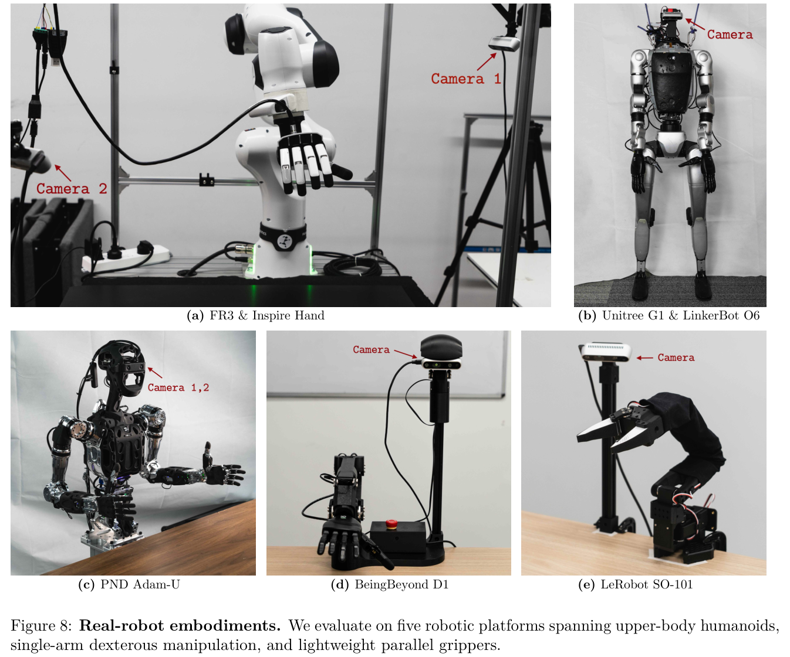
| Category | Task | Embodiment |
|---|---|---|
| Spatial | Arrange Flowers | Adam-U |
| Spatial | Water Plant | FR3+Inspire |
| Spatial | Stack Bowls | FR3+Inspire |
| Spatial | Stack Blocks | D1 |
| Long-horizon | Drawer: Open → Place → Close | FR3+Inspire |
| Long-horizon | Package: Flip → Scan | G1+O6 |
| Bimanual | Hand-over → Box | Adam-U |
| Bimanual | Pack two products → Close lid | G1+O6 |
| Generalization | Wipe Whiteboard | FR3+Inspire |
| Generalization | Clear Table | Adam-U |
| Generalization | Clear Table | SO-101 |
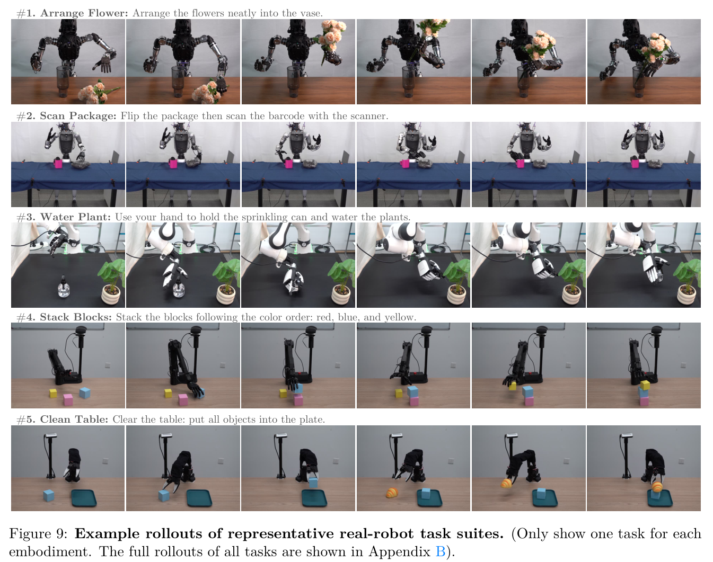
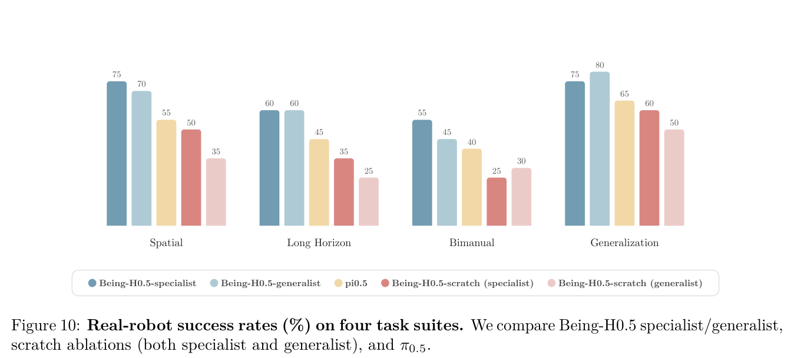
| Method | Spatial | Long Horizon | Bimanual | Generalization |
|---|---|---|---|---|
| Specialist | 75 | 60 | 55 | 75 |
| Generalist | 70 | 60 | 45 | 80 |
| π0.5 | 55 | 45 | 40 | 65 |
| Scratch (specialist) | 50 | 35 | 25 | 60 |
| Scratch (generalist) | 35 | 25 | 30 | 50 |
All simulation results use 224×224 RGB input and a 2B backbone. The generalist is trained jointly on LIBERO and RoboCasa for twice as many steps.
| Method | L-Spatial | L-Object | L-Goal | L-Long | Average |
|---|---|---|---|---|---|
| Diffusion Policy | 78.5 | 87.5 | 73.5 | 64.8 | 76.1 |
| OpenVLA | 84.7 | 88.4 | 79.2 | 53.7 | 76.5 |
| SpatialVLA | 88.2 | 89.9 | 78.6 | 55.5 | 78.1 |
| CoT-VLA | 87.5 | 91.6 | 87.6 | 69.0 | 83.9 |
| π0-Fast | 96.4 | 96.8 | 88.6 | 60.2 | 85.5 |
| GR00T-N1 | 94.4 | 97.6 | 93.0 | 90.6 | 93.9 |
| π0 | 98.0 | 96.8 | 94.4 | 88.4 | 94.4 |
| F1 | 98.2 | 97.8 | 95.4 | 91.3 | 95.7 |
| InternVLA-M1 | 98.0 | 99.0 | 93.8 | 92.6 | 95.9 |
| Discrete Diffusion VLA | 97.2 | 98.6 | 97.4 | 92.0 | 96.3 |
| π0.5 | 98.8 | 98.2 | 98.0 | 92.4 | 96.9 |
| OpenVLA-OFT | 97.6 | 98.4 | 97.9 | 94.5 | 97.1 |
| X-VLA | 98.2 | 98.6 | 97.8 | 97.6 | 98.1 |
| EO1 | 99.7 | 99.8 | 99.2 | 94.8 | 98.2 |
| Being-H0.5 (generalist) | 97.0 | 98.2 | 99.0 | 96.2 | 97.6 |
| Being-H0.5 (specialist) | 99.2 | 99.6 | 99.4 | 97.4 | 98.9 |
Training uses chunk size 8, batch size 128 and 45k steps on 4×A800 GPUs. The specialist reaches 98.9% and the generalist 97.6%.
| Modality | Method | Pick & Place | Doors/Drawers | Others | Total Avg. |
|---|---|---|---|---|---|
| 3D | 3DA | 0.0 | 2.3 | 13.1 | 5.5 |
| 3D | DP3 | 1.5 | 41.7 | 32.0 | 22.8 |
| 3D | GWM | 14.8 | 54.3 | 49.8 | 39.3 |
| RGB (256×256) | BC | 4.3 | 47.0 | 42.2 | 28.9 |
| RGB (256×256) | GR00T-N1 | 18.6 | 50.2 | 39.1 | 36.0 |
| RGB (256×256) | π0.5 | 21.5 | 57.8 | 44.9 | 41.4 |
| RGB (256×256) | π0 | 14.0 | 53.1 | 58.5 | 42.4 |
| RGB (224×224) | Being-H0.5 (generalist) | 40 | 73 | 52 | 53.3 |
| RGB (224×224) | Being-H0.5 (specialist) | 36 | 71.7 | 57.6 | 53.9 |
The evaluation uses the Human-50 setting with five held-out scenes. Being-H0.5 sets a new state of the art, with the largest gain on Pick & Place.
These ablations use LIBERO 5-shot with 10K training steps.
| Frozen | Init | L-Spatial | L-Object | L-Goal | L-Long | Avg. |
|---|---|---|---|---|---|---|
| Und+Proj+ViT | Native VLM | 67.8 | 76.8 | 57.2 | 29.8 | 57.9 |
| Und+Proj+ViT | Human-Centric | 78.6 | 78.9 | 72.6 | 46.2 | 69.0 |
| Und+Proj+ViT | Δ | +10.8 | +2.1 | +15.4 | +16.4 | +11.1 |
| Und+ViT | Native VLM | 70.6 | 50.0 | 67.0 | 17.4 | 51.3 |
| Und+ViT | Human-Centric | 85.0 | 84.2 | 80.0 | 59.0 | 77.1 |
| Und+ViT | Δ | +14.4 | +34.4 | +13.0 | +41.6 | +25.8 |
| Und Only | Native VLM | 78.4 | 84.8 | 62.0 | 49.2 | 68.6 |
| Und Only | Human-Centric | 83.2 | 79.6 | 74.0 | 63.6 | 75.1 |
| Und Only | Δ | +4.8 | -5.2 | +12.0 | +14.4 | +6.5 |
| Proj+ViT | Native VLM | 87.2 | 86.6 | 80.8 | 58.0 | 78.2 |
| Proj+ViT | Human-Centric | 86.2 | 86.2 | 84.6 | 66.8 | 81.0 |
| Proj+ViT | Δ | -1.0 | -0.4 | +3.8 | +8.8 | +2.8 |
| None (Full FT) | Native VLM | 84.2 | 83.6 | 75.0 | 65.8 | 77.2 |
| None (Full FT) | Human-Centric | 87.2 | 91.4 | 81.6 | 66.8 | 81.8 |
| None (Full FT) | Δ | +3.0 | +7.8 | +6.6 | +1.0 | +4.6 |
| Frozen | Init | L-Spatial | L-Object | L-Goal | L-Long | Avg. |
|---|---|---|---|---|---|---|
| Und+Proj+ViT | Native VLM | 61.6 | 77.0 | 68.0 | 36.0 | 60.7 |
| Und+Proj+ViT | Human-Centric | 80.8 | 81.8 | 74.4 | 52.4 | 72.4 |
| Und+Proj+ViT | Δ | +19.2 | +4.8 | +6.4 | +16.4 | +11.7 |
| Und+ViT | Native VLM | 78.4 | 84.8 | 71.4 | 38.6 | 68.3 |
| Und+ViT | Human-Centric | 83.6 | 82.6 | 80.8 | 59.2 | 76.6 |
| Und+ViT | Δ | +5.2 | -2.2 | +9.4 | +20.6 | +8.3 |
| Und Only | Native VLM | 75.8 | 84.2 | 71.2 | 59.8 | 72.8 |
| Und Only | Human-Centric | 85.2 | 90.6 | 84.2 | 68.4 | 82.1 |
| Und Only | Δ | +9.4 | +6.4 | +13.0 | +8.6 | +9.3 |
| Proj+ViT | Native VLM | 87.6 | 91.0 | 82.2 | 62.6 | 80.9 |
| Proj+ViT | Human-Centric | 89.6 | 88.8 | 89.6 | 65.8 | 83.5 |
| Proj+ViT | Δ | +2.0 | -2.2 | +7.4 | +3.2 | +2.6 |
| None (Full FT) | Native VLM | 87.8 | 94.6 | 82.6 | 71.4 | 84.1 |
| None (Full FT) | Human-Centric | 88.8 | 90.2 | 85.4 | 76.0 | 85.1 |
| None (Full FT) | Δ | +1.0 | -4.4 | +2.8 | +4.6 | +1.0 |
Findings from the pre-training ablations:
For the action expert itself, freezing up to 7 layers is harmless, but freezing more than 14 layers causes a sharp drop.
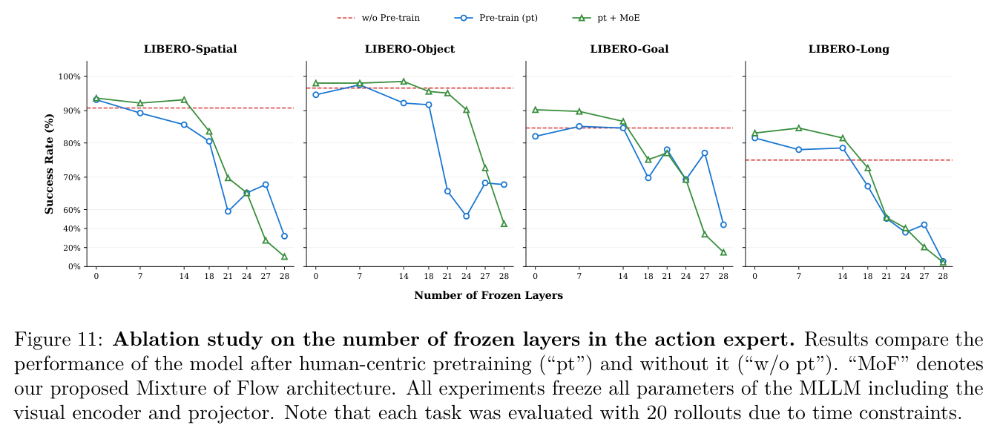
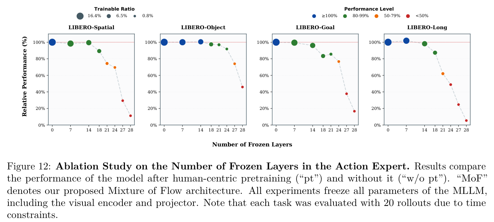
This ablation is measured with MWDS: the cosine similarity between predicted and ground-truth wrist displacement.
| Method | Lab ↑ | Wild ↑ |
|---|---|---|
| Hybrid (Ours) | 0.33 | 0.20 |
| w/o \(\mathcal{L}_{\text{MASK}}\) | 0.35 | 0.28 |
The paper states that removing \(\mathcal{L}_{\text{MASK}}\) lowers MWDS, especially on in-the-wild data. However, the table as printed shows the opposite: the ablated model scores higher on both splits.
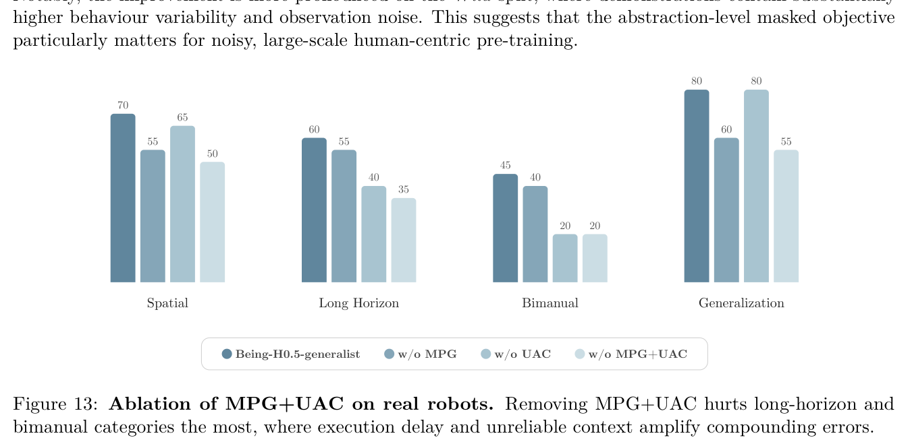
| Variant | Spatial | Long Horizon | Bimanual | Generalization |
|---|---|---|---|---|
| Generalist | 70 | 60 | 45 | 80 |
| w/o MPG | 55 | 55 | 40 | 60 |
| w/o UAC | 65 | 40 | 20 | 80 |
| w/o MPG+UAC | 50 | 35 | 20 | 55 |
Removing UAC hurts long-horizon and bimanual tasks the most. Spatial and generalization tasks degrade less.
Being-H0.5 combines a unified human–robot state-action space, UniHand-2.0 pre-training, a MoT architecture, and MPG and UAC for deployment. Together these let a single checkpoint control five heterogeneous robots robustly.
† denotes leading the part.
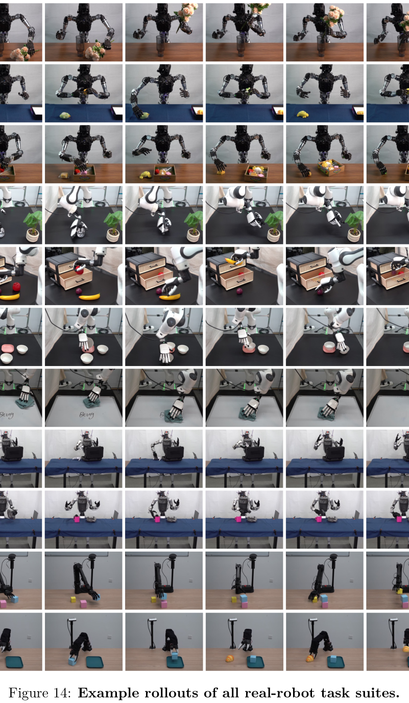